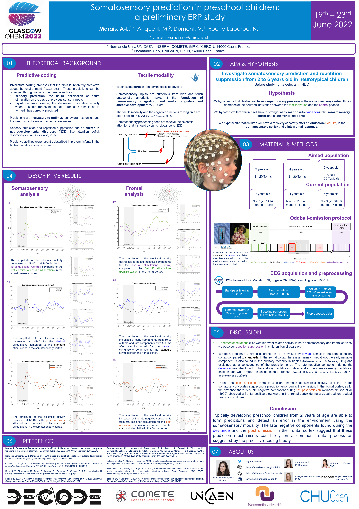
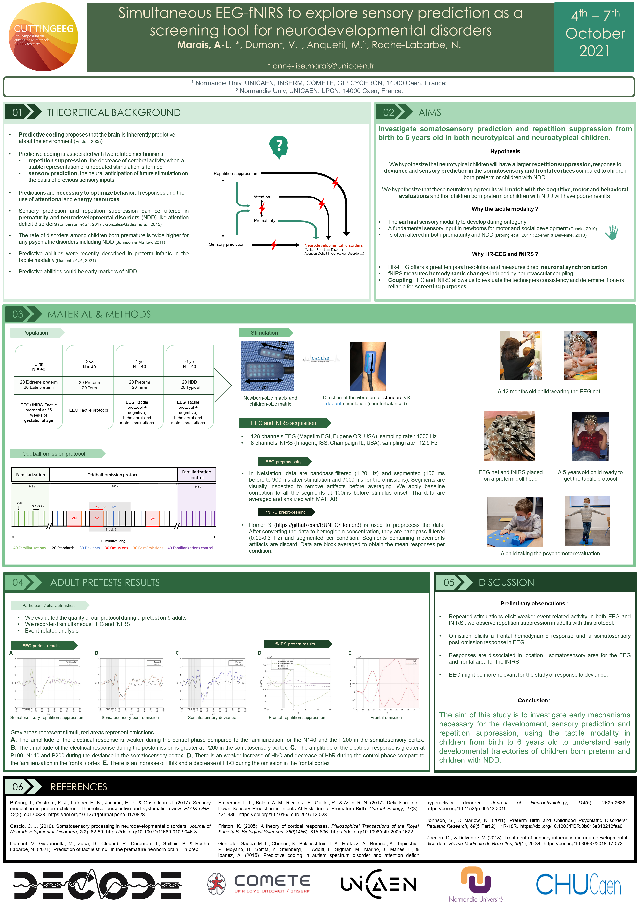

PhD Student

EEG | fNIRS | MATLAB | Neurodevelopmental disorders | Prematurity
Social medias
Contact me
Email : anne-lise.marais [at] unicaen [dot] fr
Publications
Download my publicationsOHBM 2022 Poster
To cite, please use: Marais, A-L., Anquetil, A., Dumont, V., Roche-Labarbe, N. (2022). Somatosensory prediction in preschool children: a preliminary ERP study. [Poster presentation]. OHBM, Glasgow, United Kingdoms.
Cutting EEG 2021 Poster
To cite, please use: Marais, A-L., Dumont, V., Anquetil, A., Roche-Labarbe, N. (2021). Simultaneous EEG-fNIRS to explore sensory prediction as a screening tool for neurodevelopmental disorders. [Poster presentation]. CuttingEEG, Aix-en-Provence, France.
